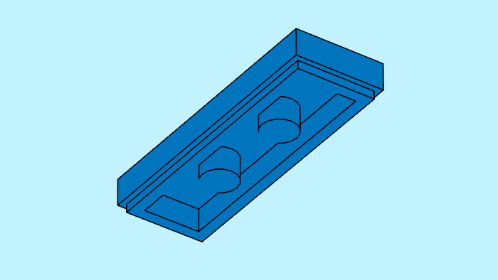
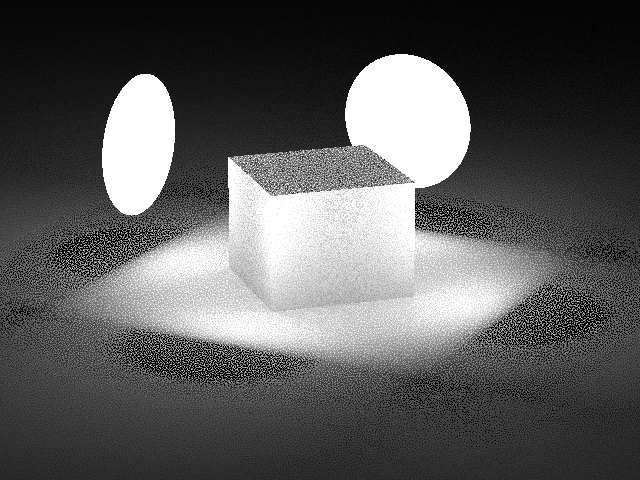
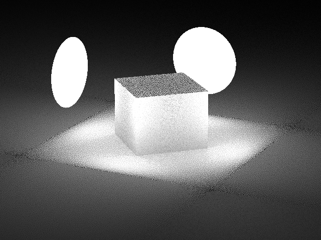

5.3.4
4 October 2023
MtoA 5.3.4 introduces Arnold 7.2.4.0. See also the MtoA 5.3.0 release notes.
Installation
- Download the Arnold for Maya plugin
- Follow these installation instructions.
Enhancements
Arnold RenderView improvements:
- Better Crop handle feedback (ARNOLD-13491)
- Better A/B compare handle feedback (ARNOLD-13572)
- Improved IPR update speed (ARNOLD-13997)
Log Window can be launched independently : You can open the Arnold Log window from the Arnold menu and the Arnold shelf, whether the Arnold RenderView is open or not. (MTOA-1478)
Standins displaying points in viewport : The aiStandIn node can now display points in the viewport when in shaded polymesh mode (MTOA-1258)
Toon shader - improved detection of internal edges: The toon shader now does a better job of detecting angle threshold silhouettes that are internal to a single object. This is most apparent in the regions between nearly parallel surfaces of an object that are at different distances to the camera. (ARNOLD-10560)
|  | |
| 7.2.3 | 7.2.4 |

Improved mesh-lights sampling and update: Improved time to first pixel (up to 10% for scenes containing many large meshes) and overall render time (up to 5% for scenes with multiple flat mesh lights). (ARNOLD-13639)
Improved interactive performance: Multiple optimizations to make interactive renders snappier by improving the interruption rate when modifying the scene. (ARNOLD-9833, ARNOLD-14077, ARNOLD-14083)
Improved Global Light Sampling behavior around flat lights: Reduced noise with Global Light Sampling for surfaces near or behind flat lights (disk or quad lights). (ARNOLD-13192)
|  |  |
| 7.2.3 | 7.2.4 |
||
Use dependency graph automatically for interactive renders: For interactive renders (IPR), the dependency graph is always enabled, regardless of the value of
options.enable_dependency_graph. Interactive rendering updates for scene changes are improved by (and in some cases require) the dependency graph, so enforcing this setting avoids potential crashes. (ARNOLD-10732)Added support for alpha channel output in PNG driver: Added new boolean parameters
skip_alphaandunpremult_alphato thedriver_pngnode. They behave in the same way as in the TIFF driver, withskip_alphaignoring the alpha channel, andunpremult_alphaselecting either unassociated alpha (on) or associated alpha (off). Please note that PNG files with associated alpha are not supported by the PNG standard. (ARNOLD-10540)OpenColorIO Alias support The OCIO color manager now supports the use of OCIO color space aliases. (ARNOLD-13998)
USD Enhancements
- Custom MaterialX node definitions MaterialX node definitions placed under a folder defined by the environment variable PXR_MTLX_STDLIB_SEARCH_PATHS are now supported when rendered with Arnold, through USD or Hydra usd#1632. There is no longer any restriction on the node definitions prefix and naming convention usd#1603.
- ArnoldProceduralCustom support in Hydra Primitives ArnoldProceduralCustom are now supported inside of Hydra, and allow to render 3rd party Arnold procedural nodes usd#739.
API Additions
- AiMaterialxGetNodeEntryFromDefinition: Given a MaterialX node definition, returns the corresponding Arnold node entry. Arnold searches for node definitions in the materialx directory in the Arnold distribution and in any directory listed in the ARNOLD_MATERIALX_NODE_DEFINITIONS environment variable. The function returns the relevant Arnold node type if the node has a native Arnold implementation, or the OSL node type if the node has an OSL implementation only, so you can safely call AiMaterialxGetOslShaderCode with the same node definition. (ARNOLD-13957)
Incompatible Changes
- AiUniverseGetOptions() no longer returns "sanitized" threads count:
AiUniverseGetOptions()returns the options set by the user, whileAiRenderSessionGetOptions()returns the options actually used by the render. Previously this behavior was not followed foroptions.threads, and both the universe and render session's options contained a "sanitized" version of the thread count. For example, a thread count of 0 was interpreted as "autodetect" and sanitized to be the number of logical cores. Now, querying the universeoptions.threadscan return 0 or other values that do not reflect what is being used. If the sanitized version is needed, replaceAiUniverseGetOptions(universe)withAiRenderSessionGetOptions(AiUniverseGetRenderSession(universe)). (ARNOLD-14083)
Bug Fixes
- MTOA-1525 - Maya 2022 in py2 environment, plugin fails to load with an error.
- MTOA-1549 - Unable to create extension attribute errors reported on plug-in load.
- MTOA-1541 - Blobby and Cloud nParticles no longer render
- MTOA-1475 - Spinner widgets in setParamater UI are limited to 100
- MTOA-1444 - Update TX Files hangs Maya
- MTOA-1158 - Tearing off viewport copy removes viewport toolbar icons
- ARNOLD-280 - Mac HighDPI: Crop Region is offset from mouse cursor
- ARNOLD-13733 - Crash on launching RenderView
- ARNOLD-12005 - Hang when toggling denoiser ('N' key) in kick
- ARNOLD-12205 - [GPU] Rare crash when process is terminating
- ARNOLD-13709 - Invalid render when new OSL shaders are created interactively
- ARNOLD-13823 - Correct scene scale conversion for nested procedurals
- ARNOLD-13983 - Crash in IPR when enabling the OptiX denoiser, light mixer, or Arnold denoiser imagers
- ARNOLD-13995 - Incorrect motion range in the instancer
- ARNOLD-14065 - Artifacts with thick curves when scaling is applied
- ARNOLD-14067 - Arnold MaterialX node definitions do not expose multiple outputs
- ARNOLD-14074 - shidx not being gathered for alembic.material_attrbute string attribute
- ARNOLD-14099 - Wrong separator used in the materialx paths
- ARNOLD-14179 Arnold RenderView menu cropped
- usd#1693 - Fix regression with Geometry lights in Hydra
- usd#1696 - Fix regression with Cryptomatte in Hydra
- usd#1613 - Invisible Hydra primitives should ignore arnold visibility
- usd#1641 - Ensure nodes created by the render delegate have the correct parent procedural
- usd#1673 - UsdUvTexture ignores missing textures in hydra
- usd#1675 - Fix UsdUvTexture default wrap modes and uvset coordinates.
- usd#1657 - Fix a motion blur sampling bug happening when a mesh has facevarying indexed normals and different number of indices per key frame
- usd#1634 - Support curves orientations identically between USD and Hydra / Prevent errors due to bad curves orientations count
System Requirements
- Maya 2022, 2023 or 2024
- Windows 10 or later, with the Visual Studio 2019 redistributable.
- Linux with at least glibc 2.17 and libstdc++ 4.8.5 (gcc 4.8.5). This is equivalent to RHEL/CentOS 7.
- x86-64 CPUs need to support the SSE4.1 instruction set.
- macOS 10.13 or later, macOS 11 and later for Maya 2024
- Apple Mac models with M series chips:
- Natively supported by Arnold for Maya 2024
- Supported under Rosetta 2 mode for older versions of Maya
- GPU rendering works on Windows and Linux only and requires an NVIDIA GPU of the Ada, Ampere, Turing, Volta, Pascal, or Maxwell architecture. We recommend using the 525.89 or higher drivers on Linux and 528.49, or higher on Windows. See Arnold GPU for more information.
- For GPU rendering, the cache also needs to be re-populated after installing a new Arnold version, updating to a new NVIDIA driver, or changing the hardware configuration of GPUs on the system. More information can be found here.
- Optix™ denoiser requires an NVidia GPU with CUDA™ Compute Capability 5.0 and above.